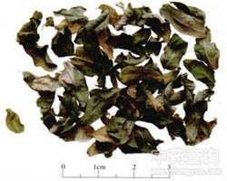

罗布麻叶

拼音
Luó Bù Má Yè
别名
红麻、茶叶花、红柳子、野麻、羊肚拉角、泽漆麻
来源
本品为夹竹桃科植物罗布麻Apocynum venetum L.的干燥叶。夏季采收，除去杂质，干燥。
生境分布
生于河岸沙质地、山沟砂地、多石的山坡、盐碱地。分布于东北、华北、西北。
药材特点
半灌木，高1～1.5m，有乳汗，无毛。枝紫红色或淡红色。叶对生，椭圆状披针形至长圆形，长1～8cm，宽0.5～2.2cm，先端钝圆，有小芒尖，基部宽楔形，边缘有不明显的细锯齿。聚伞花序顶生；花萼5深裂，被短毛；花冠粉红色、浅紫红色，钟形，先端5裂，两面具颗粒状突起；副花冠5；雄蕊5；心皮2，离生。骨突果叉生。种子顶端簇生白色细长毛。花期6～8月，果期9～10月。
性状
本品多皱缩卷曲，有的破碎，完整叶片展平后呈椭圆状披针形或卵圆状披针形，长2～5cm，宽0.5～2cm，淡绿色或灰绿色，先端钝，有小芒尖，基部钝圆或楔形，边缘具细齿，常反卷，两面无毛，叶脉于下表面突起；叶柄细，长约4mm。质脆。气微，味淡。
性味
甘、苦，凉。
功能主治
平肝安神，清热利水。用于肝阳眩晕，心悸失眠，浮肿尿少；高血压，神经衰弱，肾炎浮肿。
用法用量
6～12g。
化学成分
含芸香甙（rutin）、儿茶素、蒽醌、谷氨酸、丙氨酸、缬氨酸、氯化钾等。
药理作用
1：无药理作用数据
摘录
《中国药典》